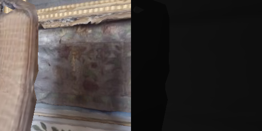
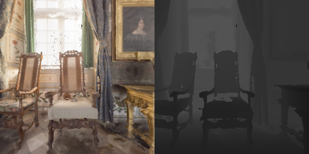
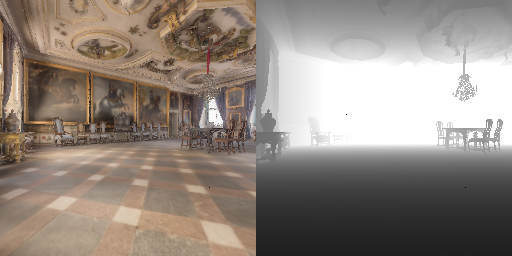
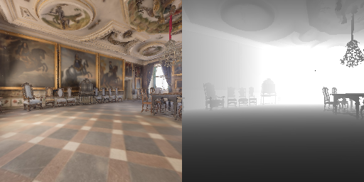
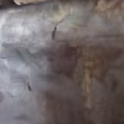

2-1 · example_pointnav.py — 你的第一个 Habitat 程序
Gym 接口。PointNav 任务。随机动作。无需联网下载数据。
创建一个 PointNav (PointGoal Navigation) 环境——Agent 被随机放在 3D 场景中，
目标是导航到指定的坐标点。Agent 使用随机动作（turn_left / turn_right / move_forward / stop）
在场景中乱走，几秒后 episode 结束。
虽然它什么也学不到（没有 RL 训练），但它是未来所有 RL rollout 的最简原型。
你通过这个程序验证：环境能创建、reset 能跑、step 能推进、观测数据格式正确。
数据集使用 habitat-test（本地文件，无需联网）。
② 核心代码 & 关键函数
完整代码
关键函数调用
| 函数 | 作用 | 说明 |
|---|---|---|
gym.make("Habitat-v0", ...) |
创建环境 | Gym 标准接口。传入 YAML 配置文件路径，Habitat 自动注册 Habitat-v0 |
env.reset() |
开始新 episode | 返回观测字典 obs。每次 reset 会随机选择起点和终点 |
env.action_space.sample() |
随机动作 | Gym 标准接口。返回 0~3 的 int：0=stop, 1=move_forward, 2=turn_left, 3=turn_right |
env.step(action) |
前进一步 | 返回 (obs, reward, done, info) — Gym 标准 4 元组 |
env.render("rgb_array") |
获取画面 | 返回 RGB+深度左右拼接的 numpy 数组 (256×512×3)，用 cv2.imshow 显示 |
gym_definitions.py)
共 30 个已注册 Gym ID：2 个通用 + 16 个 Skill 任务（含 Render 变体）+ 12 个 Home Assistant Benchmark 任务。
注册逻辑在 habitat/gym/gym_definitions.py，导入 habitat.gym 时自动触发。
| 类别 | Gym ID（Performance） | Render 变体 | 说明 |
|---|---|---|---|
| 通用 | Habitat-v0 | HabitatRender-v0 |
接受 cfg_file_path=... 参数，可加载任意 YAML 配置 |
| 用于 PointNav / ObjectNav 等导航任务，或自定义 config。 | |||
| Skill 任务 |
HabitatPick-v0 | HabitatRenderPick-v0 | 抓取物体（Fetch 机器人 + 吸盘） |
HabitatPlace-v0 | HabitatRenderPlace-v0 | 放置物体到目标位置 | |
HabitatNavToObj-v0 | HabitatRenderNavToObj-v0 | 纯导航到目标物体附近 | |
HabitatOpenCab-v0 | HabitatRenderOpenCab-v0 | 打开柜门（关节物体交互） | |
HabitatCloseCab-v0 | HabitatRenderCloseCab-v0 | 关闭柜门 | |
HabitatOpenFridge-v0 | HabitatRenderOpenFridge-v0 | 打开冰箱门 | |
HabitatCloseFridge-v0 | HabitatRenderCloseFridge-v0 | 关闭冰箱门 | |
HabitatReachState-v0 | HabitatRenderReachState-v0 | 控制手臂到达指定位姿 | |
| HAB Benchmark |
HabitatTidyHouse-v0 | HabitatRenderTidyHouse-v0 | 整理房间（PDDL 复合任务） |
HabitatPrepareGroceries-v0 | HabitatRenderPrepareGroceries-v0 | 准备食材 | |
HabitatSetTable-v0 | HabitatRenderSetTable-v0 | 布置餐桌 | |
HabitatRearrange-v0 | HabitatRenderRearrange-v0 | 通用重排任务（无 solution） | |
HabitatRearrangeEasy-v0 | HabitatRenderRearrangeEasy-v0 | 简化重排（PDDL solution 已知） | |
HabitatRearrangeEasyMultiAgent-v0 | HabitatRenderRearrangeEasyMultiAgent-v0 | 多智能体协作重排 | |
example_pointnav.py
上面这个代码块是"教学版"（16 行） — 它只保留核心逻辑：创建环境 → reset → 随机动作循环 → 打印结果。
目的是让你在 30 秒内看清整个程序的结构，不被无关细节分散注意力。
工程里的 examples/example_pointnav.py（73 行） 在此基础上加了：
| 多出的部分 | 在工程文件里怎么写的 | 为什么加这个 |
|---|---|---|
| OpenCV 可视化 | frame = env.render(mode="rgb_array"); cv2.imshow(win, frame[..., ::-1]) |
让你实时看到 Agent 的 RGB+深度画面，而不是只看终端数字 |
| 分组动作 + 暂停 | 每 10 步为一组 + time.sleep(1.0) |
防止画面闪太快看不清；给窗口时间渲染 |
| 按键退出 | cv2.waitKey(1) & 0xFF 检测 Q 键 + 窗口关闭 |
让你优雅退出，而不是 kill 进程 |
| KeyboardInterrupt | try/except KeyboardInterrupt; finally: cv2.destroyAllWindows() |
Ctrl+C 或关窗口时清理 OpenCV 资源，不留僵尸窗口 |
| Episode 自动重置 | if done: obs = env.reset(); count_steps = 0 |
一个 episode 结束自动开新的，程序持续运行到你手动退出 |
简单记法：教学版 = 骨架，工程版 = 骨架 + 可视化 + 交互 + 错误处理。 两者核心逻辑完全一致（都是 PointNav + 随机动作），建议先读懂教学版，再看工程版源码。
③ 如何创建和运行
代码已保存在 examples/example_pointnav.py。直接从仓库根目录运行：
如果在 NVIDIA GPU + GNOME 桌面下报 X_GLXMakeCurrent: BadAccess：
本课程的 example_pointnav.py 已内置修复（mode="rgb_array" + OpenCV），
直接运行即可，无需任何额外配置。详见永久修复方法。
④ 运行效果
以下是在本机 (NVIDIA RTX 2070 SUPER, Ubuntu 22.04, habitat-sim 0.2.5) 上实际运行的终端输出和画面。
终端输出（随机动作循环）
4 个动作的视觉效果对比
随机动作大概率中途抽到 stop，无法保证"前进 10 步"。下面用手动指定动作展示不同动作对视野的影响
（场景和出生点相同，使用 env.render(mode="rgb_array") 截图）。
初始位置 (reset 后)

distance=10.90m, angle=1.56rad
turn_left ×6（左转 ~90°）

视野大幅变化 — 看到了房间右侧
turn_right ×12（右转 ~90°）

视野完全不同 — 角度改变即改变"看到的世界"
move_forward ×8（前进 2m）

靠近墙壁 — 视野中物体变大
⑤ 输出结果的含义
1. 观测字典有三个 key：rgb (视觉)、depth (深度)、pointgoal_with_gps_compass (导航信号)。
这就是 PointNav 中 AI 策略能获取的全部信息 — 没有地图、没有绝对坐标、没有"这里是什么房间"的标注。
2. move_forward 的 reward 是 -0.17~-0.27：而 turn_left / turn_right / stop 只有 -0.01（slack penalty）。
为什么前进的惩罚更大？因为初始朝向 (1.56rad ≈ 89°) 几乎垂直于目标方向。
往前走不仅不靠近目标，反而可能远离 — 在 PointNav 中，选对方向比走多远更重要。
3. 距离从 10.90m 降到 10.886m 后卡住：Agent 在第 2 步撞墙。
后续 turn 只能改变朝向不能改位置 — 碰撞检测正常工作，物理引擎阻止穿墙。
4. success=0.0 但 Agent 调用了 stop：Step 9 的 stop 结束了 episode。
但 success 仍是 0 — 因为 stop 时距目标还有 11.8m（远大于 success_distance=0.1m）。
success 需同时满足 (a) 调用 stop (b) distance < 0.1m。
5. 随机动作很容易抽到 stop：这就是 RL 训练时策略网络必须学会"不随便 stop"的原因。
⑥ 试试调整这些，再观察变化
| 调整项 | 怎么改 | 预期看到什么 |
|---|---|---|
| 手动指定动作 | 把 action_space.sample() 换成固定 int：action = 1 # 一直前进 |
Agent 一直往前走直到撞墙 — 观察 distance 如何变化，何时卡住 |
| 打印更多观测 | 在循环里加：print(obs['depth'].mean()) |
深度图的平均深度值 — 越靠近障碍物均值越小 |
| 修改最大步数 | 编辑 YAML 中 max_episode_steps或创建新 YAML 覆盖这个值 |
不改 agent 永远 500 步超时；改成 20 看提前超时的效果 |
| 缩小图片分辨率 | 编辑 YAML 中 RGB sensor 的 width: 128, height: 128 |
画面变模糊，但 step 速度更快 — 理解传感器分辨率对性能的影响 |
2-2 · Native API — PointNav 任务 & 观测字典
这是本章最重要的一节。你会看到 Agent 的"眼睛"能看到什么，以及如何用代码读取。
Native API 是 Habitat 最底层的 Python 接口。与 Gym API 不同，它不经过 gym.make() 封装，
直接用 habitat.Env(config) 创建环境。这个案例演示三件事：
1. 如何用 Native API 创建环境并获取观测 — obs = env.reset() 返回一个字典，Agent 的所有"感官"都在里面
2. 观测字典里有什么 — RGB 图像（256×256×3）、深度图（256×256×1）、GPS+Compass 导航信号（2,）
3. 如何加上实时画面显示 — 把 RGB 和深度图左右拼接成 256×512，用 OpenCV 显示，不触发 GLX 错误
② 核心代码 & 关键函数调用
最小 PointNav 程序（Native API）
这个程序涉及的关键函数调用：
| 函数调用 | 作用 | 返回值 |
|---|---|---|
habitat.get_config(path) |
加载 YAML 配置文件，解析默认值和继承关系 | Config 对象（类 OmegaConf / dict） |
habitat.Env(config) |
根据配置创建模拟器 + 任务环境 | Env 对象 |
env.reset() |
开始新 episode：随机出生点、随机目标 | dict — 观测字典（rgb, depth, gps 等） |
env.step(action) |
执行动作，模拟器更新，返回新观测 | dict — 新观测字典 |
env.episode_over |
检查当前 episode 是否已结束 | bool — stop/超时/到达目标则为 True |
env.get_metrics() |
获取 episode 的评估指标 | dict — success, spl, distance_to_goal |
加上实时画面显示（RGB + 深度图拼接）
Native API 不需要 env.render() — RGB 和深度图直接在观测字典里。
把两者左右拼接成 256×512 画面，效果和 example_pointnav.py 的 render('rgb_array') 完全一致。
同样不会触发 GLX 错误。
根因：OpenCV 的 cv2.imshow() 只是把图像"提交"给窗口系统，
必须调用 cv2.waitKey(n) 才能让 GUI 事件循环真正渲染画面。
如果 imshow 后没有紧跟 waitKey，窗口就会显示为黑色或不完整。
正确写法：每行 imshow 下一行就是 waitKey(1)。
上面代码中循环末尾的 waitKey(300) 既负责画面刷新，又负责检测按键（300ms 超时）。
Gym API：env.render(mode="rgb_array") 自动把 RGB 和深度图左右拼接成 256×512。
Native API：RGB 在 obs["rgb"]（256×256），深度在 obs["depth"]（256×256×1），
需要手动拼接。上面的 make_frame() 就是干这件事的 — 先归一化深度，再 np.hstack。
③ 创建和运行
把上面的代码保存为 my_native_pointnav.py，在仓库根目录运行。Native API 必须从仓库根目录运行，因为配置文件使用相对路径。
上面的代码只是演示"怎么加画面"。实际使用建议直接跑 examples/play_pointnav.py：
WASD 控制 Agent（W=前进, A=左转, D=右转, S=停止），窗口一直显示直到你按 Q 退出。
episode 结束后按 R 重开，不会闪现消失。已内置 waitKey(1) 刷新机制，不会黑屏。
④ 运行效果
终端输出
Agent 看到的画面 — 前进 5 步前后对比
初始位置 (reset 后)

RGB 256×256 — Agent 紧贴墙壁
前进 5 步之后

视野几乎没有变化 — Agent 已经撞墙卡住, 距离停在 10.886m
⑤ 输出结果的含义
观测字典里有什么？
根据配置不同，观测字典包含不同的 key。PointNav 测试配置下：
Agent 的"世界"完全由这个字典定义。它不知道场景文件在哪里、不知道自己的绝对坐标 —
它只知道 obs 里的内容。这就是为什么 Sensor 的设计如此重要：你给什么，AI 就学什么。
1. rgb shape=(256, 256, 3), dtype=uint8：3 通道是 RGB（不是 RGBA），值域 0–255。
这和 Gym API 的 render('rgb_array') 返回的 256×512 不同 — render 自动拼接了深度图。
2. depth dtype=float32：深度值单位是米，不是像素。深度图记录的是从相机到物体表面的距离，
不是到导航目标的距离 — 两者是不同的概念。
3. 第3步开始距离不再变化：Agent 在第2步已经撞墙，后续 step 无法移动。
Habitat 的物理引擎自动阻止穿墙 — Agent 只能在 NavMesh（导航网格）上移动。
4. angle 随 move_forward 也会变化：即使是直走（不转弯），角度也会轻微变化（1.5645→1.5874→1.6013）。
因为 Agent 移动后，它相对于目标的方向自然改变 — 这是正常的几何效应。
⑥ 试试调整这些，再观察变化
| 调整项 | 怎么改 | 预期看到什么 |
|---|---|---|
| 换不同动作序列 | 把 move_forward 换成 turn_left / turn_right |
距离不变但角度变化 — 理解纯旋转不改变 Agent 位置，只改变朝向 |
| 增加传感器 | 在 YAML 的 sim_sensors 中添加 semantic_sensor |
obs 中多出一个 key — 体验"传感器声明即启用"的机制 |
| 打印 episode 元信息 | 加 print(env.current_episode.__dict__) |
看到 scene_id, start_position, goal_position 等幕后数据 |
| 调整深度图可视化 | 改 make_frame()，用 cv2.COLORMAP_JET 替换灰度 |
伪彩色深度图 — 红色=近, 蓝色=远，比灰度更直观 |
完整的官方教程在 examples/tutorials/nb_python/Habitat_Lab.py（Jupyter notebook 格式）。
它包含更多功能：交互式控制 Agent、matplotlib 可视化、自定义 Task/Sensor 注册。
上面展示的是其中最核心的部分 — 理解了这些，剩下的都是"加功能"。
练习 2-2A：打印每个观测的形状和类型
修改上面的程序，在 env.reset() 之后添加一个循环：
for key, val in obs.items(): print(key, type(val), val.shape if hasattr(val, 'shape') else 'N/A')
记录下来你看到的每一种观测 — 它们就是你未来训练模型的输入数据。
2-2B · 动作空间 — Agent 能做什么
PointNav 的离散动作空间只有 4 个动作。这是最简单也最重要的动作设计。
动作空间定义了 Agent 在环境中"能做什么"。PointNav 的离散动作空间只有 4 个动作：停止、前进、左转、右转。
这看起来简单，但已经足够完成导航任务 — 任何复杂路径都可以分解为"转+走"的组合。
这个案例演示：每个动作执行后 GPS 数据如何变化、哪些动作改变位置、哪些只改变朝向、以及Native API 和 Gym API 的动作格式差异。
② 动作空间定义 & 两种 API 的格式差异
| 动作名 | 键值 | 效果 | Native API 写法 | Gym API 编号 |
|---|---|---|---|---|
| 停止 | "stop" |
结束当前 episode | {"action": "stop"} |
0 |
| 前进 | "move_forward" |
向当前朝向移动 0.25m | {"action": "move_forward"} |
1 |
| 左转 | "turn_left" |
逆时针旋转 15° | {"action": "turn_left"} |
2 |
| 右转 | "turn_right" |
顺时针旋转 15° | {"action": "turn_right"} |
3 |
Native API：{"action": "move_forward"} — 字典格式，action 的值是字符串。更灵活，支持参数化动作。
Gym API：env.action_space.sample() — 返回 int（0-3）。Gym 封装层做了离散化编号，方便对接 RL 库（Stable-Baselines3）。
两种 API 在你的学习过程中都会遇到，理解它们的对应关系很重要。
③ 创建和运行 — 验证 4 个动作
下面的代码对每个动作：创建新环境 → reset → 执行一次 → 记录 GPS 变化。可以直接在前面 2-2 的程序中替换动作来测试。
④ 运行效果
动作前

move_forward 动作后

前进 0.25m — 视觉上几乎看不到变化，但 GPS 距离确实变了
⑤ 输出结果的含义
1. move_forward: Δ=+0.0013m（距离反而增加）：因为 Agent 初始朝向与目标方向夹角为 1.56 rad (≈89°)，
几乎垂直于目标方向。直走不会缩短距离，甚至可能远离 — 在 PointNav 中，选对方向比走多远更重要。
2. turn_left / turn_right: Δ=0（距离不变）：纯旋转动作不改变位置，所以到目标的测地距离不变。
但 角度（angle）会改变 ±0.1745 rad（=10°），下一次 forward 的方向就不同了。
3. stop: over=True（立即结束）：这是唯一导致 episode 立即结束的动作。
如果 AI 永远不调用 stop，episode 会一直运行直到超时（默认 500 步），但永远不会被判定为"成功到达"。
success 需要同时满足 (a) 调用 stop (b) 距离 < 0.1m。
⑥ 试试调整这些，再观察变化
| 调整项 | 怎么改 | 预期看到什么 |
|---|---|---|
| 走一个正方形 | 前进 4 步 → 右转 6 次 → 重复 4 轮 | Agent 走一个 ~1m×1m 的正方形，验证 "15°×6=90°" 的转向精度 |
| 连续左转 24 次 | 循环执行 turn_left 24 次 |
360° 转回原位 — 验证 15°×24=360°，角度应该基本回到初始值 |
| Gym API 中验证编号 | 在 example_pointnav.py 中手动设 action=1 |
确认 Gym API 的 int 编号和 Native API 字符串的对应关系 |
练习 2-2B：手动控制 Agent 走一个正方形
写一个循环，让 Agent 做：前进 4 步 → 右转 6 次（90°）→ 前进 4 步 → 右转 6 次 → … 重复直到 episode 结束。
观察 pointgoal_with_gps_compass 的值如何变化。这是一个经典的"验证动作空间"实验。
2-3 · benchmark.py — 标准化评估
"我的 Agent 有多好？" — Benchmark 用统一的标准回答这个问题。
Benchmark（基准测试）是 Habitat 的标准化评估框架。它在多个 episode 上运行 Agent，自动计算 Success、SPL 等指标。
这个案例演示三件事：
1. 如何定义一个 Agent — 继承 habitat.Agent，实现 act() 方法
2. 如何用 Benchmark 评估 — benchmark.evaluate(agent, num_episodes=10)
3. 为什么"靠近目标就停"这个看似合理的策略在 PointNav 中依然是 success=0
② 核心代码 & 关键函数调用
定义 Agent 并评估
关键函数调用：
| 函数调用 | 作用 | 关键参数 |
|---|---|---|
habitat.Agent |
Agent 基类，需实现 act() 和 reset() |
act(observations) → 返回 action dict |
habitat.Benchmark(config) |
创建评估器，加载任务配置和数据集 | 配置文件路径（同 Native API） |
benchmark.evaluate(agent, num_episodes) |
在多个 episode 上运行 Agent，汇总指标 | num_episodes 控制评估规模 |
改进版：SmartStopAgent — 靠近目标就停
③ 创建和运行
④ 运行效果
⑤ 输出结果的含义
这是一个非常经典的新手误解。Success 需要 同时满足两个条件：
(1) Agent 调用了 stop
(2) stop 时 Agent 距目标的测地距离 ≤ 0.1m（success_distance）
SmartStopAgent 的问题在于：它只会 move_forward，从不会转弯。
如果 Agent 的初始朝向没有正对目标，一直往前走永远到不了目标 — 距离停在 ~11m 处（撞墙了），
永远不会降到 0.5m 以下，所以 stop 根本不会被调用。
这揭示了一个本质问题：仅仅"靠近就停"不够 — AI 需要学会"先转向目标方向，再前进"。
这就是为什么导航策略需要至少 3 个动作（前进、左转、右转）才能完成 PointNav 任务。
⑥ 试试调整这些，再观察变化
| 调整项 | 怎么改 | 预期看到什么 |
|---|---|---|
| 增加转弯逻辑 | 在 act() 中加入：如果 angle 偏差大，先 turn 再 forward |
success 可能突破 0 — 体验"有转向能力"对导航的关键作用 |
| 调整 stop 阈值 | 改 distance < 0.5 为 0.15 |
更接近 success_distance(0.1m) 才停 — 但前提是 Agent 能到达目标附近 |
| 增加评估 episode 数 | 改 num_episodes=100 |
统计更稳定 — 10 个 episode 可能运气好，100 个更反映真实水平 |
| 打印每个 episode 的结果 | 在 act() 中加 print(distance, angle) |
看到 10 个 episode 各自的距离变化 — 有些出生点可能离目标更近 |
练习 2-3：给 Agent 加上转向能力
修改 SmartStopAgent.act()：读取 observations["pointgoal_with_gps_compass"] 中的 angle，
如果 abs(angle) > 0.2（约 11°），先转向目标（angle>0 则 turn_right，否则 turn_left）；否则前进。
再跑一次 benchmark，看看 success 是否有提升。
2-4 · shortest_path_follower — 聪明的 Agent
Habitat 内置了一个"学霸 Agent"——它不靠视觉，直接读取场景的导航网格，用图搜索算法找到最短路径。我们来拆解它是怎么做到的。
ShortestPathFollower 是 Habitat 内置的"最优 Agent"——它不"看"RGB 图像，而是直接读取场景的导航网格（NavMesh），
用 Dijkstra 算法计算从当前位置到目标的最短路径，然后每一步沿着这条路径走。
它要导航到的目标是 PointNav 数据集中预先定义的目标坐标——一个 3D 空间点 (x, y, z)，
附带一个 到达半径（goal_radius），Agent 进入该半径即判定为"到达"。
这个案例演示三个核心问题：
1. 导航目标从哪来？ — 目标坐标存储在数据集的 episode 中，每个 episode 有一个 NavigationGoal，包含 position 和 radius
2. 最短路径如何计算？ — NavMesh 将场景的可通行区域建模为图，Dijkstra 算法在图上搜索最短路径
3. Agent 如何沿路径走？ — 每一步调用 get_next_action(goal_pos)，返回当前应执行的动作（前进/左转/右转/停止）
4. ShortestPathFollower 能取得什么性能？ — Success≈1.0, SPL≈0.99，这是 RL 训练的理论上限
② 核心代码 & 运行流程
完整代码（带注释）
程序运行流程图
get_config()
读取 YAML
SimpleRLEnv
加载场景+数据集
ShortestPathFollower
接收 sim + goal_radius
新 episode
Agent 出生 + 目标就位
get_next_action(goal)
→ env.step(action)
RGB + Top-down
images_to_video()
关键函数调用
| 函数 | 作用 | 说明 |
|---|---|---|
habitat.get_config(...) |
加载配置 | 读取 YAML + 命令行 override。这里额外添加了 top_down_map measurement |
ShortestPathFollower(sim, radius, False) |
创建最短路径导航器 | 接收底层 sim 对象以访问 NavMesh；goal_radius 决定"到达"的判定距离；return_one_hot=False 返回离散 int 动作 |
env.reset() |
开始新 episode | 随机选择起点和终点，Agent 回到起点。episode 数据中包含 goals[0].position |
follower.get_next_action(goal_pos) |
★ 核心：计算下一步动作 | 传入目标 3D 坐标，内部调用 C++ 层的 GreedyGeodesicFollower.next_action_along(goal_pos)，在 NavMesh 上运行 Dijkstra 后返回当前最优动作（0/1/2/3） |
env.step(action) |
执行动作 | 返回 (obs, reward, done, info)。info 中包含 top_down_map 等 measurement 输出 |
maps.colorize_draw_agent_and_fit_to_height(...) |
绘制俯视地图 | 将 info["top_down_map"] 渲染为彩色地图：白色=可通行区域，黑线=墙壁/障碍，绿色圆=目标，红色箭头=Agent |
images_to_video(images, dirname, name) |
生成导航视频 | 将帧列表合成 .mp4 文件，保存到 examples/images/shortest_path_example/ |
导航目标是如何确定的？
目标不是代码里写死的，而是从数据集的 episode 文件中读取的。一条完整的导航目标确定链路如下：
Episode 数据文件 (JSON)
每个 episode 包含：起点坐标、起点朝向、目标坐标 + 到达半径
目标在代码中的传递链
1. 数据集加载阶段：
JSON 文件 → PointNavDatasetV1 解析每个 episode → 包装为 NavigationEpisode 对象
其中 goals 字段是 List[NavigationGoal]，每个 NavigationGoal 有 position 和 radius 两个属性
2. env.reset() 阶段：
env.reset() → 从 dataset 中选一个 episode → 设置为 env.current_episode
Agent 被放置到 start_position，目标坐标存储在 current_episode.goals[0].position
3. 导航循环中：
每一帧调用 follower.get_next_action(env.current_episode.goals[0].position)
→ 传入目标的 (x, y, z) 坐标 → follower 内部计算到该坐标的最短路径 → 返回下一步动作
最短路径是如何计算的？（NavMesh + Dijkstra）
场景加载时
自动预计算
从当前位置
搜到目标位置
一串连续的
3D 坐标序列
沿路径点
返回 turn/move/stop
第 1 层 — NavMesh（C++ 层，Habitat-Sim 内部）：
场景（.glb 文件）加载时，Habitat-Sim 自动分析 3D 几何，计算出所有 Agent 可以站立和行走的区域。
这些区域被离散化为一张图（Graph）——每个节点是一个可到达的 3D 点，边表示两个点之间可以直接移动。
这张图就是 NavMesh（Navigation Mesh）。墙壁、家具、楼梯边缘等不可通行区域不会出现在图中。
第 2 层 — GreedyGeodesicFollower（C++ 层，Habitat-Sim 内部）：
在 NavMesh 图上运行 Dijkstra 最短路径算法，找到从 Agent 当前位置到目标位置的一条最短路径。
路径是一串连续的 3D 坐标点（waypoints）。"Geodesic"（测地线）的含义是：路径沿可通行表面走，
而不是穿墙的直线。
第 3 层 — ShortestPathFollower（Python 层，habitat-lab）：
封装了 C++ 的 GreedyGeodesicFollower。每一步调用 get_next_action(goal_pos) 时：
1. 检查是否需要重建 follower（场景切换时）
2. 调用 self._follower.next_action_along(goal_pos) → C++ 层
3. C++ 层计算：Agent 当前位置在路径上的哪个点？下一个路径点在哪？需要前进还是转向？
4. 返回一个离散动作 int：0=stop（已到达），1=move_forward，2=turn_left，3=turn_right
5. 如果目标在不可达的 NavMesh 孤岛上，抛出 GreedyFollowerError → 返回 stop
NavMesh 计算和 Dijkstra 搜索是计算密集型操作，必须在 C++ 中完成以保证性能。
Python 层的 ShortestPathFollower 只是一个薄封装——它把 Habitat-Sim 的 C++ 能力暴露给 Python 用户。
这种"底层 C++ 计算 + 上层 Python 接口"的模式在 Habitat 中非常普遍（渲染管线、物理引擎同理）。
深入理解：NavMesh 地图从哪来？——完整链路跟踪
上面说到"场景加载时自动预计算 NavMesh"，但你可能会问：场景文件是谁选的？NavMesh 具体是怎么生成的？如果我想换一张地图该改哪里？ 下面从 Episode 定义到 C++ NavMesh 构建，完整跟踪这条链路。
episode.scene_id
= "van-gogh-room.glb"
NavigationTask
overwrite_sim_config()
sim_config.scene_id
+ navmesh_settings
分析 .glb 几何
→ 生成 NavMesh
make_greedy_follower()
→ next_action_along()
| 环节 | 文件 | 行号 | 关键代码 |
|---|---|---|---|
| ① | habitat-test-scenes/.../habitat_test.json |
— | Dataset JSON 中每个 episode 的 "scene_id": "data/scene_datasets/habitat-test-scenes/van-gogh-room.glb" |
| ② | habitat/tasks/nav/nav.py |
L1329 | config.simulator.scene = episode.scene_id — Task 将 Episode 的场景 ID 写入 Simulator 配置 |
| ③ | habitat/sims/habitat_simulator/...py |
L327 L352-357 |
sim_config.scene_id = self.habitat_config.scene；并根据 agent radius/height 设置 NavMeshSettings |
| ④ | habitat_sim C++ (Recast/Detour) | — | habitat_sim.Simulator(config) 构造时检测 config.navmesh_settings 非空 → 自动调用 Recast 分析 .glb 3D 几何 → 生成 NavMesh → 存入 sim.pathfinder |
| ⑤ | habitat/tasks/nav/shortest_path_follower.py |
L54-64 | self._follower = self._sim.make_greedy_follower(0, goal_radius, ...) — 从 sim.pathfinder 读取 NavMesh，创建贪心跟随器 |
NavMesh 是如何生成的？——Recast/Detour 算法
Habitat-Sim 使用业界标准的 Recast/Detour 库（游戏引擎中用了几十年）自动生成 NavMesh。 整个过程在 C++ 层完成，不需要手动标注任何东西：
场景 3D 三角网格
（墙壁、地板、家具）
把三角网格转为
3D 体素（小方块）
根据 radius/height/
slope/climb 参数筛选
把可通行体素
聚合为凸多边形
多边形 → 图节点
邻接 → 图边
| 参数 | 默认值 | 含义 |
|---|---|---|
agent_radius |
= agent_config.radius | Agent 的碰撞半径。小于此宽度的通道视为不可通行 |
agent_height |
= agent_config.height | Agent 的"身高"。天花板低于此高度的区域视为不可通行 |
agent_max_climb |
默认 0.2m | Agent 能攀爬的最大台阶高度（低于此的台阶视为可通行地形） |
agent_max_slope |
默认 45° | Agent 能行走的最大坡度。超过此角度的斜坡不可通行 |
include_static_objects |
见 config | 是否将场景中的静态物体（家具等）也纳入障碍物计算 |
场景文件（.glb）是完整的 3D 模型 — 包括墙壁纹理、家具、光照等所有视觉内容。 NavMesh 只是从 3D 几何中提取出来的一张"可通行地图" — 只记录"哪些地方可以站、哪些地方可以走"。 这两者的关系类似于：一栋楼的完整 BIM 模型 vs 楼层平面图。导航只需要平面图，渲染才需要完整模型。
如何指定或替换地图？——4 种方式
| 方法 | 操作 | 改动位置 | 适用场景 |
|---|---|---|---|
| ① | 换 .glb 场景文件 | Dataset JSON episode.scene_id |
用不同的 3D 场景（如从 apartment_1 换成 skokloster-castle）。只需改 JSON，NavMesh 自动重建 |
| ② | 换 场景数据集配置 | config 中的 scene_dataset |
正式数据集（Gibson/MP3D/HSSD）需要 .scene_dataset.json 来定义场景路径、语义标签等，不能直接用裸 .glb |
| ③ | 调整 NavMesh 参数 | habitat_simulator.py L350-358 |
同一个场景，改变 agent_radius/agent_height 会得到不同的 NavMesh（更宽/更高的 agent 意味着更少的可通行区域） |
| ④ | 使用预烘焙 .navmesh | pathfinder.save_nav_mesh() + load_nav_mesh() |
场景很大时 Recast 计算耗时。先跑一次保存为 .navmesh 文件，后续直接加载跳过重建 |
对于 habitat_test 数据集：3 个场景（apartment_1, skokloster-castle, van-gogh-room）都是 Habitat-Sim pip 安装时自带的，
存储在 data/scene_datasets/habitat-test-scenes/。每次启动时 Episode 随机分配一个场景 — 所以你跑 example_pointnav.py 时每次看到的房间可能不同。
从模拟到真实：机器人如何自己生成 NavMesh？
一个关键洞察：如果真实机器人能生成 NavMesh，整个 Habitat 导航管线就能直接在真实世界运行。
ShortestPathFollower 不关心 NavMesh 是从 .glb 还是从 Lidar 数据生成的——它只认 PathFinder 接口。
这意味着模拟器中的导航算法和真实机器人的导航算法可以是同一套代码。
.glb 完美几何
→ Recast 直接出 NavMesh
ShortestPathFollower / RL Policy
→ env.step(action) 循环
传感器数据
→ SLAM → Mesh → Recast
上图 — 模拟器和真实机器人在 NavMesh 层面是打通的。左右两条路径的输出格式完全相同。
真实机器人获取 NavMesh 的三条流水线
| # | 流水线 | 传感器 | 核心算法 | 输出 → NavMesh 的路径 |
|---|---|---|---|---|
| 1 | 2D 占据栅格 | 2D Lidar 或深度图投影 |
GMapping / Cartographer / Hector SLAM | 2D 占据栅格地图 → 直接当 2D NavMesh 用（ROS nav2 的 costmap 模式）。 ⚠️ 丢失高度信息，不支持多层/斜坡 |
| 2 | 3D 体素 → 表面重建 | RGB-D 相机 （Realsense / Kinect） |
Voxblox (TSDF 体素) OctoMap (八叉树) 或 RTAB-Map (RGB-D SLAM) |
TSDF 体素 → Marching Cubes 提取三角 Mesh → Recast 在 Mesh 上生成 NavMesh ✅ 真 3D，支持多层、斜坡 |
| 3 | 3D LiDAR 点云 → Mesh | 3D LiDAR （Velodyne / Ouster） |
LOAM / LeGO-LOAM / FAST-LIO | LiDAR 点云 → 点云配准 + SLAM → Poisson Surface Reconstruction → 三角 Mesh → Recast 生成 NavMesh ✅ 精度最高，室外/大场景首选 |
流水线 1（2D 占据栅格）— 最简单，适合室内平面导航：
如果机器人只在单层平面上移动（如家庭扫地机、仓库 AGV），2D 栅格地图完全够用。
ROS2 nav2 默认就是这个方案 — 它内部也用 Dijkstra/A* 做全局规划，和 Habitat 的 ShortestPathFollower 思路完全一致，
区别只是地图表示（2D 栅格 vs 3D NavMesh）。
流水线 2（RGB-D + 体素融合）— Habitat 研究者最常用的真实世界方案：
Habitat 的许多论文作者（如 FAIR / Meta）在真实世界实验中使用这个方案。
因为 RGB-D 相机便宜（Realsense D435 约 $200），Voxblox 的 TSDF 重建质量可靠，
Marching Cubes 提取的 Mesh 可以直接喂给 Recast——这和 Habitat 内部的 NavMesh 生成用的是同一个算法。
流水线 3（3D LiDAR）— 精度最高的方案，适合大场景/室外：
3D LiDAR 点云密度高、范围远（可达 100m+），是自动驾驶的事实标准。
LOAM 系列算法实时性好，Poisson 重建能生成平滑的 Mesh。
代价是 LiDAR 本身价格高（数千到上万美元），对算力要求也更高。
涉及的关键算法一览
| 算法 | 类别 | 输入 | 输出 | 在流水线中的角色 |
|---|---|---|---|---|
| Cartographer | 2D/3D SLAM | Lidar + IMU | 2D/3D 占据栅格地图 | Google 开源的实时 SLAM。室内用 2D 模式直接出栅格地图；3D 模式可输出点云 |
| RTAB-Map | RGB-D SLAM | RGB-D | 2D 栅格 + 3D 点云 + 视觉里程计 | 老牌方案，ROS 集成成熟。输出 3D 点云后可用 Poisson 重建转 Mesh |
| Voxblox | 体素建图 | 深度图 + 位姿 | TSDF 体素 / ESDF | ETH Zurich 出品。TSDF 体素直接用 Marching Cubes 提取 Mesh — 这是 Habitat→真实打通的关键环节 |
| OctoMap | 体素建图 | 深度图/点云 + 位姿 | 八叉树占据地图 | 八叉树压缩 3D 地图，内存效率高。也能提取 Mesh，适合大场景 |
| Marching Cubes | 表面重建 | 体素数据（TSDF） | 三角 Mesh | 经典算法（1987）。从体素提取等值面，生成三角网格 — 这就是 Recast 要吃的格式 |
| Poisson 重建 | 表面重建 | 3D 点云 + 法向量 | 三角 Mesh | 从有向点云重建光滑闭合 Mesh。LiDAR 方案的标准选择 |
| Recast/Detour | 导航网格 | 三角 Mesh | NavMesh（凸多边形图） | Habitat-Sim 内部使用。模拟和真实共用这一层——这是打通的关键 |
虽然在 NavMesh 层面模拟和真实可以打通，但实际落地还有几个现实差距：
1. 真实 NavMesh 有噪声和盲区：传感器视线被遮挡的区域（如沙发后面）无法建图，NavMesh 会有"空洞"。
相比之下，Habitat 的 NavMesh 是完美覆盖的。
2. 动态障碍物：Recast 生成的是静态地图。真实环境中的行人、移动的椅子等需要额外的局部避障层
（类似 ROS 的 DWA/TEB）——这也是为什么真实导航系统通常是"全局规划 + 局部规划"双层架构。
3. 定位误差：Habitat 中 Agent 的位置是模拟器直接给出的精确坐标。真实机器人需要 AMCL 等定位算法，
定位误差会传导到导航决策。
4. 但这些都不改变核心结论：只要你能生成 NavMesh，Habitat 的导航算法（ShortestPathFollower、RL Policy）
就能直接用。模拟器中训练的 RL 策略，在真实环境中用同一套 NavMesh 做导航，是活跃的研究方向（PointNav Sim2Real）。
对比阅读：ShortestPathFollower 与 ROS 导航有什么区别？
如果你有 ROS 背景，可能会问：这不就是 ROS 的 move_base / nav2 吗？其实两者的设计哲学完全不同—— 一个是为 AI 研究提供"标准答案"的 oracle，一个是为真实机器人提供可靠性的工程系统。
Habitat ShortestPathFollower
🎯 目标：提供导航的"理论上限"
🗺️ 地图：NavMesh — 3D 三角网格
🔍 规划：单层 Dijkstra 全局规划
🚫 避障：无 — 场景是静态的
📡 传感器：不使用 — 直接读几何数据
👁️ 信息：完美信息（完整 3D 几何）
📐 维度：真 3D（支持多层、斜坡）
📍 定位：模拟器直接给精确坐标
🔗 坐标系：单一场景本地坐标
👥 受众：AI/RL 研究者
ROS Navigation (move_base / nav2)
🤖 目标：在真实世界中可靠导航
🗺️ 地图：Costmap — 2D 占据栅格
🔍 规划：全局规划 + 局部规划 双层架构
🚫 避障：DWA/TEB 实时局部避障
📡 传感器：Lidar/深度相机实时更新
👁️ 信息：部分可观测（噪声、盲区）
📐 维度：通常是 2D (x, y, yaw)
📍 定位：AMCL 等融合多种传感器
🔗 坐标系：TF2 管理多级坐标变换
👥 受众：机器人工程师
| 对比维度 | ShortestPathFollower | ROS Navigation |
|---|---|---|
| 地图表示 | NavMesh — 3D 三角网格，Habitat-Sim 从场景 .glb 几何自动生成 | Costmap — 2D 栅格图。全局 costmap 来自 SLAM/预建地图；局部 costmap 由传感器实时更新 |
| 规划架构 | 单层规划 — 只在 NavMesh 上跑一次 Dijkstra，直接沿路径走。没有局部重规划 | 双层规划 — Global Planner（Dijkstra/A*）出大致路径 → Local Planner（DWA/TEB）负责速度平滑和实时避障 |
| 动态障碍物 | 不存在 — 场景是纯静态的，NavMesh 在加载后不再变化 | 核心能力 — 传感器持续扫描，local costmap 动态更新，检测到障碍物立即调整轨迹 |
| 传感器依赖 | 完全不使用传感器进行规划 — follower 直接读取 NavMesh 内部图结构，RGB/Depth 仅用于可视化 | 高度依赖传感器 — Lidar/深度相机提供 real-time 点云或扫描数据来构建和更新 costmap |
| 信息完备性 | 完美信息 — 知道场景中每一面墙、每一件家具的精确 3D 几何。没有"未知区域" | 部分可观测 — 传感器有噪声、视野有限，未被扫描的区域标记为"未知"，不保证最优路径 |
| 定位 | 无定位误差 — Agent 的 (x, y, z, quaternion) 由模拟器直接给出，精度无限 | 需要 AMCL / EKF 等定位算法融合 IMU、里程计、Lidar 等多源数据，存在累积误差 |
| 空间维度 | 真 3D — NavMesh 天然支持多层建筑、楼梯、斜坡。Agent 可以在不同楼层间导航 | 通常是 2D (x, y, yaw) — 3D 导航（如无人机、多楼层）仍在积极发展中（nav2 有实验性 3D 支持） |
| 坐标管理 | 单一场景本地坐标系 — 没有 TF 变换树，所有坐标在同一个参考系下 | TF2 变换树 — 管理 map→odom→base_link→sensor 等多级坐标变换，是 ROS 的基础设施 |
ShortestPathFollower = 理想世界的导航标准答案。它告诉你"如果一切完美，最优路径是什么"。
它的价值在于为 RL 训练提供 ground truth 参考——你知道理论上限是多少（Success=1.0, SPL≈0.99），
就能判断自己的策略学到了多少。
ROS Navigation = 真实世界的导航工程方案。它要应对传感器噪声、定位漂移、动态障碍、计算资源限制等实际问题。
两者的设计目标不同，不能互相替代——但理解 ShortestPathFollower 的简单性，有助于你更深刻地理解
ROS 导航的每个模块为什么存在。
③ 如何创建和运行
这个示例依赖 matplotlib 绘图。在纯 headless 服务器上，在脚本开头添加：
import matplotlib; matplotlib.use('Agg') — 这会切换到非交互式后端，仅生成文件不弹窗。
④ 运行效果
实际终端输出
同一个城堡场景，三个 episode 分别走了 77 步、9 步、31 步。差异来源于每次 reset 随机选取不同的起点和目标： Episode 1 的目标刚好在出生点附近（几步就到），Episode 0 的目标在城堡的另一个区域（需绕行大量墙壁）。 这说明导航难度高度依赖 episode 的起点-目标配对——同一个场景可以同时包含"几秒钟走完"和"绕整个城堡"的任务。
导航视频 — 左侧 RGB 第一人称视角 + 右侧 Top-down 俯视地图
以下三个视频是实际运行生成的结果。每个视频并排显示：左侧 = Agent 看到的 RGB 画面（第一人称）， 右侧 = Top-down 地图（白色=可通行 NavMesh，黑线=墙壁，绿色圆=目标，红色箭头=Agent 位置与朝向）。 注意观察 Episode 0（77 步）中 Agent 如何沿白色 NavMesh 区域绕行，从不穿越黑色墙壁。
Episode 0 — 长距离导航（77 步）
起点和目标分布在城堡不同区域，需要绕过多个房间和走廊
Episode 1 — 超短距离导航（9 步）
目标恰好在出生点附近，几步即达 — 这是最简单的 episode 类型
Episode 2 — 中等距离导航（31 步）
中等难度的 episode — 需要绕过一些墙壁但不需要穿越整个城堡
Top-Down 地图细节放大
初始位置（reset 后第一帧）

🔵 起点 (start_position) 🟢 目标 (goal.position)
🔴 红色箭头 = Agent 当前位置与朝向
白色 = NavMesh 可通行区域，黑色线条 = 墙壁/障碍物边界
导航结束位置（77 步后）

Agent 已到达目标附近（距目标 0.113m ≤ goal_radius 0.25m）
77 步走完城堡迷宫式路径 — 沿白色 NavMesh 区域绕行
⑤ 输出结果的含义
1. Success=1.0, SPL=0.988 — 几乎完美：ShortestPathFollower 使用 NavMesh 的最短路径，
是 PointNav 任务的性能理论上限。如果你的 RL 策略能达到 SPL≈0.98，训练就趋近最优。
SPL = Success × (最短路径长度 / 实际路径长度)，0.988 表示实际路径比最短路径仅长 ~1.2%。
2. 78 步走 11m 的迷宫路径：Agent 起点在城堡左下角 (-7.37, 6.58)，目标在右上角 (-5.31, 17.28)。
直线距离虽然只有约 11m，但城堡内部有大量墙壁和房间分隔——Agent 不能穿墙，
只能沿白色 NavMesh 区域移动。78 步 × 0.25m/步 ≈ 19.5m 的实际行走距离，远大于直线距离。
3. NavMesh 是导航的基础设施：所有 Agent（包括你的 RL 策略）都被限制在 NavMesh 内。
没有 NavMesh，Agent 无法判断哪里可以通过 — 场景数据必须预计算导航网格。
NavMesh 由 Habitat-Sim 在场景加载时自动生成，存储为内部图结构。
4. SPL 为什么不是 1.0？离散动作空间（步长 = forward_step_size = 0.25m）必然引入轻微误差 —
Agent 不能"沿路径精确走"，只能每次前进固定距离或转固定角度（10° 或 30°）。
转弯后的位置会微微偏离最优路径，累积成 ~1.2% 的额外路程。这是离散动作空间的固有特性。
5. distance_to_goal = 0.113m < goal_radius = 0.25m：follower 判定"已到达"的条件是
Agent 进入目标周围的半径为 goal_radius 的球体。0.113m 已经在球内，所以 episode 以 success 结束。
⑥ 试试调整这些，再观察变化
| 调整项 | 怎么改 | 预期看到什么 |
|---|---|---|
| 增加 episode 数量 | 改脚本中 for episode in range(3) → range(10) |
不同 episode 起点和目标都不同 — 有些在走廊里几步就到，有些要绕多个房间，步数从 15 到 150+ 不等 |
| 换一个场景 | 修改 YAML 中的 scene 路径指向其他 .glb 文件 |
不同场景的 NavMesh 差异巨大 — 小场景几步就到，大场景 100+ 步。地图可视化让你直观看到场景布局 |
| 修改 goal_radius | 在创建 follower 前设置 goal_radius = 1.0 # 改成 1m |
更宽松的到达条件 → 更少步数就 success。但评估指标会变差（distance_to_goal 更大就停了） |
| 查看生成视频的不同帧 | 用视频播放器逐帧观看输出的 .mp4 | 看到 Agent 在 Top-down 地图上沿白色 NavMesh 区域移动的完整轨迹，观察何时转弯、何时直行 |
| 打印每步的动作和坐标 | 在 step 循环中加入：print(f"Step: action={best_action}, pos={info['position']}") |
看到每一步 follower 选择了什么动作，Agent 的 3D 坐标如何逐帧变化 — 理解"前进→靠近目标→判断是否需要转弯"的决策循环 |
练习 2-4：对比不同 episode 的导航难度
运行 ShortestPathFollower 跑 10 个 episode，记录每个 episode 的步数和 SPL。
观察步数的分布 — 最短几步？最长几步？为什么差异这么大？
进阶：在脚本中打印每个 episode 的 start_position 和 goals[0].position，
计算起点到目标的直线距离，与实际的步数 × 0.25m 行走距离对比。你会发现走廊中的 episode 比值接近 1.0，
而需要绕过多个房间的 episode 比值可达 2.0+ ——这就是路径效率的概念来源。
2-5 · 自定义传感器与指标
Habitat 的一切组件都通过 Registry 注册 + YAML 声明 + 运行时自动装配。这个案例演示如何在不修改框架源码的前提下，给 Agent 添加全新的传感器和评估指标。
Registry（注册表）是 Habitat 的核心扩展机制。一切组件 — Task、Sensor、Measure、Action —
都通过 Registry 注册，通过 YAML 声明，运行时自动装配。不需要写任何胶水代码。这个案例具体做了两件事：
1. 注册一个自定义传感器 agent_position — 返回 Agent 当前的 3D 世界坐标 (x, y, z)
2. 注册一个自定义指标 episode_info — 在 reset 时附加自定义字段 my_value，在 step 时移除
核心目的是让你看到：写一个类 + 加一个装饰器 + 在配置中声明一行 = 新功能立即可用。
② 核心代码 & 关键函数
自定义传感器：AgentPositionSensor
自定义指标：EpisodeInfoExample
运行时注入 — 在配置中声明自定义组件
关键函数调用
| 函数 | 调用时机 | 说明 |
|---|---|---|
Sensor.__init__(sim, config) |
环境创建时 | Habitat 自动传入 sim 实例和配置。这里 print("The answer to life is", 42) 证明配置值正确传递 |
Sensor.get_observation(obs) |
每次 reset() 和 step() 后 | 返回 numpy 数组。这里返回 sim.get_agent_state().position — Agent 当前 3D 坐标 |
Sensor._get_uuid() |
注册时 | 返回该传感器在 obs 字典中的 key 名称，如 "agent_position" |
Sensor._get_observation_space() |
注册时 | 声明观测数据的 shape 和 dtype。这里是 Box(shape=(3,), dtype=float32) |
Measure.reset_metric(episode) |
每次 env.reset() 时 | 只在 reset 时调用一次。这里复制 episode 属性 + 附加 my_value=5 |
Measure.update_metric(episode, action) |
每次 env.step() 后 | 每步 step 都调用。这里只复制 episode 属性，不附加 my_value — 用于示范生命周期差异 |
③ 如何创建和运行
方式一：运行原始示例
方式二（推荐）：运行增强验证脚本
我们添加了 examples/verify_custom_sensor.py，用 5 个明确的验证步骤来检验传感器和指标的正确性。
④ 运行效果
原始示例的实际输出
增强验证脚本的完整输出（推荐对照查看）
⑤ 如何验证传感器注册成功？（没有可视化测试怎么办）
自定义传感器通常不产生可视化输出——它只是一个返回 numpy 数组的函数。但你可以通过以下5 个验证点来确认一切正常。 这也是实际开发中调试自定义组件的方法论。
验证传感器
① __init__ 被调用
print("The answer to life is", 42) → 证明配置值传入正确
② 出现在 obs 字典中
"agent_position" in obs → 证明注册成功
③ 返回值合理性
坐标是 3 个浮点数，且在场景范围内 → 证明数据格式正确
④ step 后数值变化
比较 step 前后的坐标，差异约 0.25m → 证明传感器在每步更新
验证指标
⑤ my_value 生命周期
reset 后 my_value=5 存在 → 证明 reset_metric() 被调用
step 后 my_value 消失 → 证明 update_metric() 被调用且行为不同
Habitat 中的 sensor 大多数都是"数据源"而非"可视化组件"——RGB sensor 恰好有图像，但
GPS compass sensor、collision sensor、joint state sensor 等都没有可视化输出。
验证它们的标准方法就是：断言其返回值的数据类型、shape、值域和生命周期行为符合预期。
两个 assert 语句比任何可视化都更可靠 — 前者是"看着像"，后者是"一定是"。
⑥ 试试调整这些，再观察变化
| 调整项 | 怎么改 | 预期看到什么 |
|---|---|---|
| 修改 answer_to_life | 把 answer_to_life=42 改成 answer_to_life=999 |
传感器 init 打印变为 "The answer to life is 999" — 证明配置系统正确传递了你的值 |
| 修改 my_value | 把 my_value = 5 改成 my_value = 100 |
reset 后 metrics 中 my_value=100。注意 step 后同样消失 — 生命周期与值无关 |
| 在 update_metric 中也加 my_value | 在 update_metric() 末尾加：self._metric["my_value"] = self._config.VALUE |
reset 后和每步 step 后都有 my_value — 体验生命周期控制的灵活性 |
| 添加更多传感器 | 注册一个新 sensor 返回 self._sim.get_agent_state().rotation |
obs 中多一个 agent_rotation key — 体验"写类+装饰器=新功能"的开发流程 |
| 打印所有注册组件 | 在脚本末尾加：print(habitat.registry.mapping.keys()) |
看到 Registry 中所有已注册的 task/sensor/measure/lab_sensor — 理解全局注册表的概念 |
2-1 到 2-4 你用的是别人写好的组件。2-5 是第一次你写自己的组件。 后面第 4 步（改配置实验）和第 6 步（RL 训练）都会频繁使用这个模式 — 你可能需要添加自定义奖励函数（Measure）、自定义传感器（Sensor）、甚至自定义任务（Task）。 理解"写类 → 装饰器 → 配置声明"这个三步流程，是真正使用 Habitat 做研究的基础。
练习 2-5：写一个自定义距离传感器
注册一个名为 distance_to_goal_sensor 的自定义传感器，在 get_observation() 中计算
Agent 当前位置到 episode 目标的欧氏距离并返回。提示：参考 AgentPositionSensor 的写法，
使用 sim.get_agent_state().position 和 episode.goals[0].position。
然后运行 verify_custom_sensor.py 看它出现在 obs 字典中。
核心理解：step/reset 交互循环
跑完 5 个示例后，你应该对下面这张图形成清晰的直觉。
Agent 随机出生
返回初始 obs
2. env.step(action) → 新 obs
3. 检查 env.episode_over
这整个循环就是一个马尔可夫决策过程 (MDP) 的展开 —— State (观测) → Action (动作) → Next State (新观测) → Reward (奖励)。 在后面的章节中你会看到 RL 训练就是数百万次地重复这个循环，每次根据 reward 微调策略参数。
学后自检 — 你掌握了什么
6 个问题验证你是否真正理解了"示例在做什么"。
Q1：Native API 和 Gym API 的区别是什么？
Native API 返回观测字典，动作也是字典格式（{"action": "move_forward"}）；Gym API 在 Native 上包了一层，返回标准的 (obs, reward, done, info) 元组，方便对接 Stable-Baselines3 等现成 RL 库。
Q2：obs["rgb"] 的 shape 是什么？dtype 是什么？
shape 是 (H, W, 3)，3 个通道是 RGB（不是 RGBA）。dtype 是 uint8（范围 0-255）。H 和 W 由 YAML 配置决定，默认通常是 256×256。
Q3：PointNav 的 GPS+Compass 观测包含什么信息？
一个 shape=(2,) 的 float32 数组：[distance, angle]。distance = 当前到目标的测地距离(米)；angle = 当前朝向与目标方向的夹角(弧度)。这是 PointNav 最核心的导航信号。
Q4：ShortestPathFollower 为什么不需要 RGB 图像？
它不"看"图像 — 它直接读取预计算的 NavMesh（导航网格） 和场景的图形结构，用 Dijkstra 算法规划路径。可以把 NavMesh 理解为"内置的地图 GPS"。
Q5：env.episode_over 和 done 是什么关系？
env.episode_over 是 Native API 的终止标志；done 是 Gym API 的终止标志。两者含义相同，只是不同 API 层的命名差异。episode 结束的条件：stop 被调用 / 达到目标 / 超时。
Q6：跑完这一章后，你下次打开 example_pointnav.py 应该能回答什么问题？
你应该能回答：① 每一行在做什么；② obs 包含哪些 key，每个 key 的 shape 和含义；③ action 的格式是什么；④ 如何换一个 action 让 Agent 做不同的事。